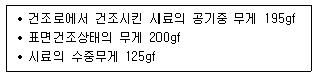
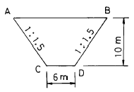
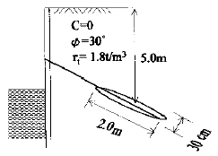
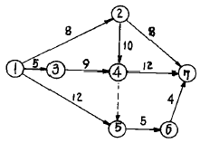
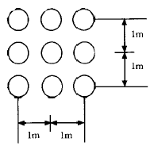
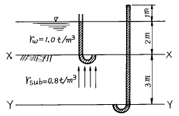
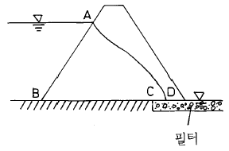

건설재료시험산업기사 (2003-05-25 기출문제)
1과목: 콘크리트공학
1. 외기온도가 25℃ 미만일 때 콘크리트의 비비기로부터 치기가 끝날 때까지의 한도는 몇 분인가?
- 60
- 90
- 120
- 150
(정답률: 67%)

2. 다음 중에서 콘크리트 공사중에 수행하는 시험이 아닌 것은?
- 압축강도시험
- 공기량시험
- 비파괴시험
- 단위용적중량시험
(정답률: 59%)
3. 다음 중 콘크리트의 인장강도와 균열에 대한 저항성을 높이고 인성을 대폭 개선시키는 것을 주목적으로 하는 특수 콘크리트는?
- 경량콘크리트
- 중량콘크리트
- 고강도콘크리트
- 섬유보강콘크리트
(정답률: 70%)
4. 일반적으로 강제식 믹서일 경우 콘크리트의 비비기 시간은 믹서안에 재료를 투입한 후 얼마를 표준으로 하고 있는가?
- 30초 이상
- 60초 이상
- 90초 이상
- 120초 이상
(정답률: 알수없음)
5. 콘크리트의 압축강도 시험을 위해 직경이 10㎝인 공시체에 하중을 가했더니 최대하중 18tonf에서 파괴되었다. 이 공시체의 압축강도는 얼마인가?
- 210㎏f/cm2
- 229㎏f/cm2
- 240㎏fcm2
- 272㎏f/cm2
(정답률: 82%)
6. 다음중 시방배합표에 기재되는 사항이 아닌 것은?
- 굵은골재의 최대치수
- 물-시멘트비
- 조립률
- 잔골재율
(정답률: 54%)
7. 프리스트레스트 콘크리트에서 콘크리트에 프리스트레스 60,000kgf을 도입하였는데 여러 가지 원인에 의해 12,000kgf의 프리스트레스 감소가 생겼다. 이때의 프리스트레스 유효율은?
- 20%
- 40%
- 60%
- 80%
(정답률: 0%)
8. Creep의 양을 좌우하는 요소로서 맞지 않는 것은?
- 재하되는 기간
- 재하가 시작하는 시점의 콘크리트의 재령과 강도
- 재하되는 콘크리트의 AE제 첨가여부
- 재하되는 응력의 크기
(정답률: 37%)
9. 콘크리트의 배합설계시 단위수량을 줄이는 방법으로 잘못된 것은?
- 슬럼프값은 될 수 있는 한 작게 한다.
- 적당한 공기를 함유하는 AE콘크리트로 한다.
- 적당한 입도와 형상의 골재를 사용한다.
- 가능한 한 최대치수가 작은 골재를 사용한다.
(정답률: 알수없음)
10. 다음 중 알칼리골재반응의 시험방법이 아닌 것은?
- 암석학적 시험법
- 모르타르 방법
- 화학법
- 지깅법
(정답률: 34%)
11. 수중콘크리트에 대한 다음 설명중 옳은 것은?
- 물-시멘트비는 60%이하로 해야 한다.
- 단위시멘트량은 370 kgf/m3이상으로 한다.
- 트레미, 콘크리트 펌프를 사용할 때 슬럼프 표준은 3∼5cm 범위이다.
- 완전히 물막이를 할 수 없는 수중인 경우에는 유속은 8m/초 이내라야 한다.
(정답률: 알수없음)
12. 압축공기를 이용하여 호스 속으로 운반한 모르타르 또는 그의 재료를 시공면에 뿌려서 만든 모르타르를 무엇이라 하는가?
- 수밀모르타르
- 숏크리트
- 주입모르타르
- 프리팩트모르타르
(정답률: 알수없음)
13. 한중콘크리트 치기 후 가장 적절한 양생 방법은?
- 습윤양생
- 보온양생
- 수중양생
- 피막양생
(정답률: 알수없음)
14. 구조물 표면이 하얗게 얼룩지는 현상을 말하며, 비에 젖었다 말랐다 하면서 염분 용해와 수분 증발이 되풀이되면서 생기는 현상을 무엇이라 하는가?
- 레이탄스
- 백태(백화)
- 건조수축
- 블리딩
(정답률: 알수없음)
15. 굵은골재의 최대치수에 대한 콘크리트의 압송관 최소 호칭치수의 설명으로 옳은 것은?
- 굵은골재의 최대치수가 20㎜일 때 압송관의 최소 호칭 치수는 100㎜ 이하이다.
- 굵은골재의 최대치수가 20㎜일 때 압송관의 최소 호칭 치수는 100㎜ 이상이다.
- 굵은골재의 최대치수가 25㎜일 때 압송관의 최소 호칭 치수는 100㎜ 이하이다.
- 굵은골재의 최대치수가 25㎜일 때 압송관의 최소 호칭 치수는 125㎜ 이상이다.
(정답률: 알수없음)
16. 구조물 유지관리 상태평가에서 건습의 반복작용, 염화물이온의 침투, 내부팽창압, 화학작용, 하중강도, 하중의 반복작용 등에 관하여 평가하는 항목은?
- 구조물에 작용하는 열화외력의 평가
- 구조물을 구성하고 있는 재료의 평가
- 구조물의 시공시 평가
- 구조물의 구조 특성 평가
(정답률: 25%)
17. 콘크리트 재료의 계량에 있어 혼화제의 계량오차의 범위 는 몇 %이내인가?
- 1%
- 2%
- 3%
- 4%
(정답률: 알수없음)
18. 서중콘크리트에 관한 설명 중 틀린 것은?
- 하루평균 기온이 25℃ 또는 최고온도가 30℃를 초과하는 시기에는 서중콘크리트로 시공해야 한다.
- 콘크리트 치기를 끝냈을 때에는 즉시 양생을 시작하고 적어도 24시간은 노출면이 건조하는 일이 없도록 습윤상태로 유지해야 한다.
- 서중콘크리트는 응결경화가 빠르며, 표면수 증발이 크기 때문에 단위수량을 가능한 크게 결정해야 한다.
- 서중콘크리트는 비빈 후 되도록 빨리 치는 것이 바람직하며, 최대 1.5시간 이내에 쳐야 한다.
(정답률: 19%)
19. 다음중 골재의 흡수량(absorption)에 대한 설명으로 옳은 것은?
- 골재알의 표면에 붙어 있는 수량
- 표면건조포화상태에서 습윤상태가 될 때까지 흡수되는 수량
- 절대건조상태에서 표면건조포화상태가 될 때까지 흡수되는 수량
- 공기중건조상태에서 표면건조포화상태가 될 때까지 흡수되는 수량
(정답률: 알수없음)
20. 시방배합결과 물 180 kgf/m3, 잔골재 650 kgf/m3, 굵은골재 1000 kgf/m3을 얻었다. 잔골재의 표면수율이 3%, 굵은 골재의 표면수율이 0% 라고 하면 현장배합상의 단위수량은?
- 160.5 kgf/m3
- 170.5 kgf/m3
- 189.5 kgf/m3
- 199.5 kgf/m3
(정답률: 28%)
2과목: 건설재료 및 시험
21. 스트레이트(straight)아스팔트에 대한 설명중 옳지 못한 것은?
- 원유를 증류해서 만든 아스팔트이다.
- 공기나 열과 접촉하면 산화,중축합반응(重縮合反應)이 생겨 점성이 없어지는 특성이 있다.
- 신도나 점도, 방수성이 블로운(Blown)아스팔트 보다 나쁘다.
- 충격에 약하고 도로포장용으로 많이 사용된다.
(정답률: 알수없음)
22. 건설공사품질시험기준 중 흙댐의 중심점토일때 함수량 시험은 토량이 몇 m3마다 실시하는가?
- 1000m3
- 700m3
- 500m3
- 300m3
(정답률: 30%)
23. 다음중에서 압축 강도가 가장 큰 석재는 어느 것인가?
- 대리석
- 사암
- 화강암
- 점판암
(정답률: 알수없음)
24. 염화칼슘을 사용한 콘크리트의 성질로서 틀린 것은?
- 적당량의 염화칼슘을 가하면 마모저항성이 커진다.
- 염화칼슘은 시멘트양의 4~6%가 적당하다.
- 황산염에 대한 저항성이 적어진다.
- 알카리 골재 반응을 촉진한다.
(정답률: 알수없음)
25. 굵은골재의 비중과 흡수율을 알기위한 실험결과가 다음과 같은 경우 표면건조 포화상태의 비중과 흡수율은?

- 비중 2.65, 흡수율 5.6%
- 비중 2.6, 흡수율 5.6%
- 비중 2.79, 흡수율 2.6%
- 비중 2.67, 흡수율 2.56%
(정답률: 20%)
26. 입도가 잘 맞추어진 골재와 적당한 경도의 Asphalt로 만들어 상온에서 유동성이 좋게한 가열혼합식 아스팔트 혼합물을 무엇이라고 하는가?
- Mastic Asphalt
- Elastite
- Asphalt felt
- Sheet asphalt
(정답률: 알수없음)
27. 다음 수지 중에서 열경화성 수지에 해당되지 않는 것은?
- 페놀수지
- 멜라민수지
- 아크릴수지
- 폴리에스테르수지
(정답률: 30%)
28. 단위 용적 중량이 1.65tonf/m3인 굵은 골재의 비중이 2.65일 때 이 골재의 공극율은 얼마인가?
- 28.6%
- 62.3%
- 67.7%
- 37.7%
(정답률: 알수없음)
29. 시멘트 모르터의 압축강도 시험(KS L51⑤)에서 시멘트 양이 280gf 일때 표준사의 중량은?
- 1250gf
- 756gf
- 686gf
- 510gf
(정답률: 알수없음)
30. 시멘트의 응결에 대한 설명으로 잘못된 것은?
- 수량이 많으면 응결은 빨라진다.
- 온도가 높을수록 응결은 빨라진다.
- 분말도가 높으면 응결은 빨라진다.
- C3A가 많을수록 응결은 빨라진다.
(정답률: 알수없음)
31. 르샤텔리(Le Chatelie) 비중병의 0.5cc눈금까지 광유를주입한 다음 시멘트 64ｇ을 첨가하여 눈금이 22.0cc로 증가되었다면 이 시멘트의 비중은?
- 2.94
- 2.98
- 3.⑤
- 3.15
(정답률: 70%)
32. 목재의 장점에 대한 설명으로 틀린 것은?
- 비중에 비하여 강도가 크다.
- 온도에 따른 팽창계수가 비교적 적다.
- 열과 전기의 전도성이 적다.
- 내구성이 크고 재질이 균질하다.
(정답률: 알수없음)
33. AE제의 특성 설명 중 틀린 것은?
- 단위수량이 적고, 동결융해에 대한 저항성이 크다.
- 콘크리트 내부에 공극이 많기 때문에 콘크리트의 투수계수를 증대시키므로 수밀성 콘크리트에는 사용할 수 없다.
- 단위 시멘트량이 같은 콘크리트에서 빈배합의 경우 AE콘크리트가 압축강도가 높다.
- 알칼리 골재 반응의 영향이 적고, 응결 경화에 있어서 발열량이 적다.
(정답률: 알수없음)
34. 아스팔트와 모래, 자갈, 필러(filler) 등을 가열 혼합해서 도로포장에 사용하는 것을 무엇이라 하는가?
- 입도조정기층
- 쉬이트(sheet)아스팔트
- 실코트(seal coat)
- 아스팔트 콘크리트
(정답률: 40%)
35. 다음 폭약중에서 동해(凍害)를 입기에 가장 쉬운 것은?
- 카알릿
- 니트로글리세린
- ANFO
- T.N.T
(정답률: 57%)
36. 골재의 단위용적중량 시험 중 봉다짐 시험에 관한 설명으로 틀린 것은?
- 골재의 최대치수가 50mm 이하인 경우에 적용한다.
- 골재를 용기에 가득 채운후에 25회씩 두번 다진다.
- 시료는 기건상태로 건조 시킨후 충분히 혼합한다.
- 동일시료에 대해서 같은 방법으로 행한 시험의 오차는 1% 이내여야 한다.
(정답률: 알수없음)
37. 다음은 탄소강에 비해 합금강의 특징을 나타낸 것이다. 옳지 않은 것은?
- 인장강도와 경도가 크다.
- 내 마멸성이 적다.
- 탄소강에 여러 원소(금속)를 넣어 만든다.
- 무게를 줄일 수 있어 재료가 절약된다.
(정답률: 31%)
38. 다음 중 기폭제로 쓰이지 않는 것은?
- 질화납(Pb(N3)2)
- 뇌산수은(Hg(ONC)2)
- 질산암모늄유제폭약(ANFO)
- D.D.N.P(diazodinitrophenol)
(정답률: 31%)
39. 목재를 인장재로 사용하기 어려운 이유가 아닌 것은?
- 마디,옹이 등으로 인장강도가 작아지기 쉽다.
- 섬유방향의 인장인 세로 인장강도가 약하다.
- 섬유가 변형되어 인장강도가 떨어지기 쉽다.
- 목재의 이음이 어렵다.
(정답률: 알수없음)
40. 다음의 혼화재료 중에서 콘크리트의 워커빌리티를 개선하는 효과가 없는 것은?
- Pozzolan
- AE제
- 응결 경화촉진제
- 시멘트 분산제
(정답률: 37%)
3과목: 건설시공학
41. 암거가 전후의 수로 바닥보다 아주 낮은 위치에 축조되는 경우에 수로교로서는 횡단하지 못할 경우에 사용되는 수로의 암거는?
- 맹암거
- 사이폰암거
- 아치암거
- 박스암거
(정답률: 알수없음)
42. 터널시공중 붕괴에 대하여 가장 주의를 요하는 것은 다음 중 에서 어느 경우인가?
- 동바리공의 해체
- 버력 처리
- 동바리공의 조립
- 콘크리트 복공
(정답률: 46%)
43. 준설과 매립을 동시에 할 수 있고 토량이 많고 연한 토질에 적합한 준설선은?
- differ dredger
- grab dredger
- bucket dredger
- pump dredger
(정답률: 30%)
44. 터널 외형 단면보다 약간 큰 단면을 가진 강재틀을 추진시켜 굴착하고 후방에서 조립된 아치를 1차 라이닝으로 하는 터널 굴진공법으로 용수를 동반하는 연약지반에 적합한 터널공법은?
- T.B.M공법
- 쉴드(Shield)공법
- 침매터널 공법
- 파이프루프(Pipe Roof)공법
(정답률: 알수없음)
45. 노반(路盤)또는 기층에서의 수분의 모관 상승을 차단하고 표면을 안정시키기 위해 표면이 흡수성일 때 혼합물의 포설에 앞서 시공하는 것은?
- 프라임 코오트(Prime Coat)
- 시일 코오트(Seal Coat)
- 핏치(Pitch)
- 컷백 아스팔트(Cut back Asphalt)
(정답률: 알수없음)
46. 암석의 발파이론에서 Hauser 의 발파기본식은? (단, L = 폭약량, C = 발파계수, W = 최소저항선)
- L = C· W
- L = C· W2
- L = C· W3
- L = C· W4
(정답률: 알수없음)
47. AE 콘크리트를 보통 콘크리트와 비교할 때 AE 콘크리트의 장점이 아닌 것은?
- 워커빌리티가 좋다.
- 동결융해에 대한 저항성이 크다.
- 골재의 알칼리 반응을 크게 한다.
- 사용수량을 15% 정도로 감소시킬 수 있다.
(정답률: 알수없음)
48. 샌드드레인 공법은 시공정밀도를 확인하기 어려울 뿐만아니라 배수재의 절단 등의 문제가 있기 때문에 투수성이 큰 망상의 포대에 모래를 채워 시공하므로 샌드드레인의 이러한 결점을 보완할 수 있는 공법은?
- 웰포인트(Well Point)공법
- 팩드레인(Pack Drain)공법
- 심지배수(Wick Drain)공법
- 페이퍼드레인(Paper Drain)공법
(정답률: 알수없음)
49. 연직 하중이 20ton이고 단독 기초면이 1.0m × 1.0m의 정방형일때 가는 모래층에 대하여 최대 압축응력 σc 는 얼마인가?
- 17.5 t/m2
- 20.0 t/m2
- 25.3 t/m2
- 10.0 t/m2
(정답률: 알수없음)
50. 무진동 무소음 공법으로 발파에 의하지 않고 팽창에 의하여 기존 건물이나 암(岩)을 폭파하는 폭약은?
- 카알릿(Carlit)
- 안포(AN-FO)폭약
- 캄마이트(Calmmite)
- 함수(Slurry)폭약
(정답률: 알수없음)
51. 셔블계 굴착기중 파내는 드래그 셔블 이라고도 하며 힘이 크고 기계의 위치보다 낮은 곳의 땅깎기, 도랑파기 작업에 사용하는 것은?
- 파워셔블
- 클램셸
- 드래그라인
- 백호
(정답률: 알수없음)
52. 다음의 건설기계 중에서 셔블(shovel)계 굴착기에 포함되지 않는 것은?
- 백호(Backhoe)
- 크램셀(Clamshell)
- 그레이더(Grader)
- 드래그라인(Dragline)
(정답률: 알수없음)
53. 다음 절토단면도에서 길이 30m에 대한 토량을 구하면?

- 4300m3
- 5300m3
- 6300m3
- 7300m3
(정답률: 알수없음)
54. 돌쌓기 공법에서 줄눈에 모르터를 사용하고 뒷채움에 콘크리트를 사용하는 방식은?
- 메쌓기
- 찰쌓기
- 정층(整層)쌓기
- 부정층(不整層)쌓기
(정답률: 37%)
55. 노상 위에 포장하는 것으로 윤하중을 고르게 분포시키는 층을 무엇이라 하는가?
- 중간층
- 차단층
- 표층
- 보조 기층
(정답률: 알수없음)
56. 아래 그림에서 모래층에 어스앵커의 극한 저항은 몇 ton인가? (단, 콘크리트 그라우팅은 일정한 압력하에서 시공 되며, 정지토압계수는 K0이다)

- 3.89
- 4.89
- 5.89
- 6.89
(정답률: 알수없음)
57. 옹벽의 안정성 검토시 고려사항이 아닌 것은?
- 활동(Sliding)에 대한 안정
- 전도(Over turning)에 대한 안정
- 지반의 지지력(Bearing capacity)에 대한 안정
- 유효응력(Effective stress)에 대한 안정
(정답률: 46%)
58. 수직갱에 물이 고였을 경우 어떤 발파방법이 좋은가?
- 벤치컷
- 번컷
- 피라밋컷
- 스윙컷
(정답률: 28%)
59. 원심력 철근콘크리트 말뚝의 특징으로서 옳지 않은것은?
- 강도가 크기 때문에 지지말뚝으로 적합하다.
- 말뚝재료의 입수가 용이하다.
- 말뚝의 이음부에 대한 신뢰성이 크다.
- 말뚝 타입시 본체에 균열이 발생하기 쉽다.
(정답률: 16%)
60. 그림의 Net work 에서 critical path는? (단, activity 상의 숫자는 소요기간을 표시)

- ① → ② → ⑦
- ① → ② → ④ → ⑦
- ① → ③ → ④ → ⑦
- ① → ② → ④ → ⑤ → ⑥ → ⑦
(정답률: 25%)
4과목: 토질 및 기초
61. 10m × 15m의 장방형 기초위에 q = 6t/m2의 등분포 하중이 작용할 때 지표면 아래 10m에서의 수직응력을 2 : 1 법으로 구한 값은?
- 3t/m2
- 2.4t/m2
- 2.1t/m2
- 1.8t/m2
(정답률: 25%)
62. 지표가 수평인 연직 옹벽에 있어서 주동토압 계수와 수동토압 계수의 비는? (단, 흙의 내부 마찰각은 30° 이다.)
- 1/3
- 3
- 9
- 1/9
(정답률: 8%)
63. 다음중 직접기초에 속하지 않는것은?
- 독립기초
- 복합기초
- 전면기초
- 말뚝기초
(정답률: 10%)
64. 다짐에너지에 관한 설명 중 옳지 않은 것은?
- 다짐 에너지는 램머의 중량에 비례한다.
- 다짐 에너지는 시료의 체적에 비례한다.
- 다짐 에너지는 램머의 낙하고에 비례한다.
- 다짐 에너지는 타격수에 비례한다.
(정답률: 알수없음)
65. 다음의 사운딩(Sounding)방법 중에서 동적인 사운딩(Sounding)은?
- 이스키 메타(Iskymeter)
- 베인 전단시험(Vane Shear Test)
- 더취 콘 관입시험(Dutch Cone Penetrometer)
- 표준관입시험(Standard Penetration Test)
(정답률: 34%)
66. 아래 그림과 같이 사질토 지반에 타설된 무리마찰말뚝이 있다. 말뚝은 원형이고 직경은 0.4m, 설치간격은 1m이었다. 이 무리말뚝의 효율은 얼마인가?

- 55%
- 62%
- 68%
- 75%
(정답률: 0%)
67. 그림과 같이 물이 위로 흐르는 경우 Y - Y 단면에서의 유효응력은?

- 3.4t/m2
- 1.4t/m2
- 4.4t/m2
- 2.4t/m2
(정답률: 알수없음)
68. 연약 점토의 전단강도를 측정하는 현장 시험 방법은?
- 베인 전단 시험
- 직접 전단 시험
- 오가 보오링
- CBR 시험
(정답률: 55%)
69. 평판재하시험에서 침하량 1.25㎜에 해당하는 하중강도가 2.3㎏/cm2일때 지지력 계수는?
- 15.5㎏/cm3
- 18.8㎏/cm3
- 7.8㎏/cm3
- 5.5㎏/cm3
(정답률: 17%)
70. 어떤 흙에 대한 일축압축 강도가 1.2㎏/cm2이었고, 파괴면과 최대 주응력면이 이루는 각을 측정하였더니 45° 였다이 흙의 전단강도는?
- 0.25㎏/cm2
- 0.6㎏/cm2
- 3.5㎏/cm2
- 0.35㎏/cm2
(정답률: 알수없음)
71. 어떤 시료를 입도분석한 결과 #200체 통과량이 56%이었고 에터버그 시험결과 액성한계가 40%이었으며 카사그랜드 소성도의 A선위의 구역에 plot되었다면 이 시료는 통일 분류법으로 다음중에 어디에 해당되는가?
- SM
- SC
- CL
- MH
(정답률: 0%)
72. Boiling 현상은 주로 어떤 지반에 많이 생기는가?
- 모래지반
- 사질점토지반
- 보통토
- 점토질지반
(정답률: 알수없음)
73. 어떤 흙의 습윤단위중량(γt)이 1.852g/cm3이고 함수비(W)가 42%일때 이 흙의 건조단위중량(γd)은 얼마인가?
- 1.304 g/cm3
- 1.351 g/cm3
- 1.417 g/cm3
- 1.454 g/cm3
(정답률: 20%)
74. 두께 6m의 점토층이 있다. 이 점토의 간극비는 eo= 2.0이고 액성한계는 WL = 70%이다. 지금 압밀하중을 2㎏/cm2에서 4㎏/cm2로 증가시키려고 한다. 예상되는 압밀침하량은? (단, 압축지수 Cc는 Skempton의 식 Cc = 0.009(WL - 10)을 이용할것)
- 0.27m
- 0.33m
- 0.49m
- 0.65m
(정답률: 알수없음)
75. 변수위 투수시험에서 1.25m의 초기수두가 2시간동안 0.5m로 떨어졌다. 이때 stand pipe의 직경은 5mm 이고 시료의 길이는 200mm, 시료의 직경은 100mm 이다. 이 흙의 투수계수는?
- 4.36× 10-5mm/sec
- 5.63× 10-5mm/sec
- 6.36× 10-5mm/sec
- 7.63× 10-5mm/sec
(정답률: 알수없음)
76. 다음의 연약지반 처리공법에서 일시적인 공법은?
- 웰 포인트 공법
- 치환 공법
- 콤포져 공법
- 샌드 드레인 공법
(정답률: 알수없음)
77. 단위 체적중량 1.8t/m3, 점착력 2.0t/m2, 내부마찰각 0°인 점토지반에 폭 2m, 근입깊이 3m의 연속기초를 설치하였다. 이 기초의 극한 지지력을 Terzaghi 식으로 구한 값은? (단, 지지력 계수 Nc = 5.7, Nr = 0, Nq = 1.0이다.)
- 23.2t/m2
- 16.8t/m2
- 12.7t/m2
- 8.4t/m2
(정답률: 알수없음)
78. 다음의 흙댐에서 유선망을 작도하는데 있어 경계조건이 틀린 것은?

- AB는 등수두선이다.
- BC는 등수두선이다.
- CD는 등수두선이다.
- AD는 유선이다.
(정답률: 10%)
79. 다음 중 사면 안정 해석법과 관계가 없는 것은?
- 비숍(Bishop)의 방법
- 마찰원법
- 펠레니우스(Fellenius)의 방법
- 뷰지네스크(Boussinesq)의 이론
(정답률: 34%)
80. 내부 마찰각이 26° 인 어떤 흙을 삼축압축시험 했을 때 최소 주응력면과 파괴면이 이루는 각은?
- 32°
- 19°
- 16°
- 8°g
(정답률: 알수없음)